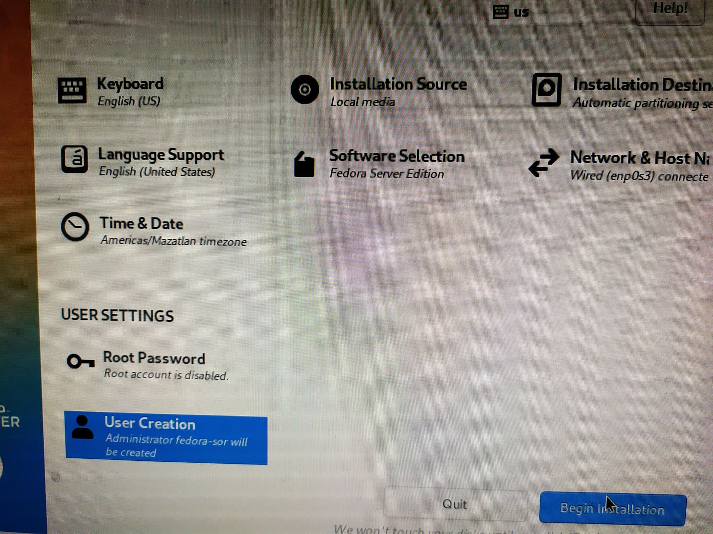
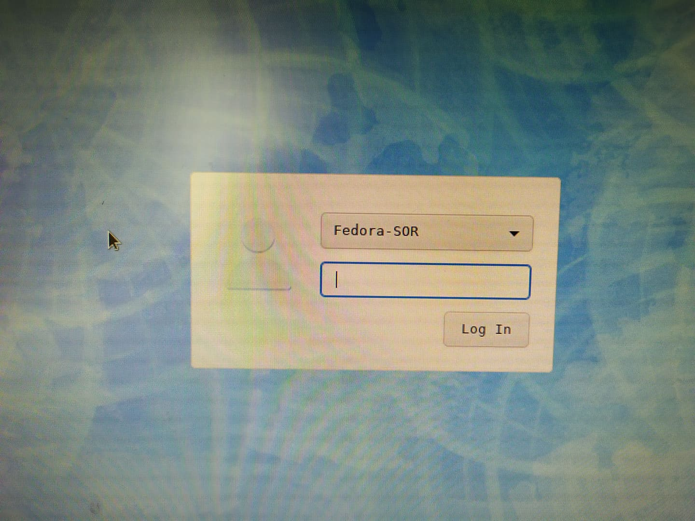

Instalar Linux Server (Fedora) y dar de alta usuarios y grupos de usuarios
Siguiendo los pasos de la primera actividad vamos a descargar nuestro .iso desde la página oficial GetFedora
Nota: Esta instalación es ligera por el hecho que no incluye una interfaz gráfica ni un entorno de escritorio. Seguimos los siguientes pasos para la instalación del Linux server, y después instalaremos un entorno de escritorio para seguir trabajando de una manera más familiar.
Hacemos boot a nuestro medio de instalación
Seleccionamos nuestro idioma
Creamos un usuario y contraseña
Verificamos todos los demás campos (particiones, zona horaria [igual que en la Actividad 1 con Manjaro]

Esperamos a que se instalen todos los paquetes
Al reiniciar nos toparemos con un command prompt para la línea de comandos
Hay que correr el siguiente comando para instalar el entorno de escritorio y administrador de ventanas
sudo yum -y groupinstall 'X Window System" XFCE
Si esto no funciona podemos en su caso correr:
yum groupinstall "XFCE" -y
Y correr:
systemctl set-default graphical.target
Para actualizar el entorno al reiniciar el servidor
En este caso escogí XFCE ya que es de mi agrado por ser ligero y fácil de usar, pero existen otras opciones de entornos de escritorio como KDE, GNOME o simplemente administradores de ventanas como Openbox o i3

De esta manera queda instalado Fedora Server con una interfaz gráfica utilizando XFCE
Instalar usuarios y grupos de usuarios
De manera irónica ahora procederemos a abir una terminal para crear usuarios y grupos de usuarios mediante la línea de comandos.
Corremos el siguiente comando para crear usuarios:
sudo useradd -m [Nombre de Usuario] -p [Contraseña]
Podemos repetir esto para añadir los usuarios que queramos (de una manera más segura en la realidad)
Ahora para agregar un grupo de usuarios sencillamente corremos el siguiente comando:
sudo groupadd [Nombre del Grupo]
Creamos entonces los mismos grupos de la actividad anterior.
Para agregar un usuario a un grupo corremos el siguiente comando:
sudo usermod -a -G [Grupo] [Usuario]
el comando corto -a indica un "append" y la -G indica al grupo al que dirijimos la sentencia
Para poder ver los miembros de un grupo podemos correr el siguiente comando:
grep [grupo] /etc/group
Grep es un global regular expression parser que nos va a regresar el match de lo encontrado con nuestra busqueda
Y de esta manera tenemos 4 grupos de usuarios diferentes para nuestros usuarios instalados en Linux.